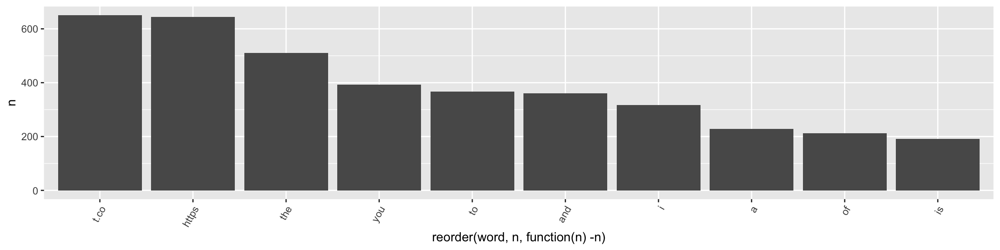
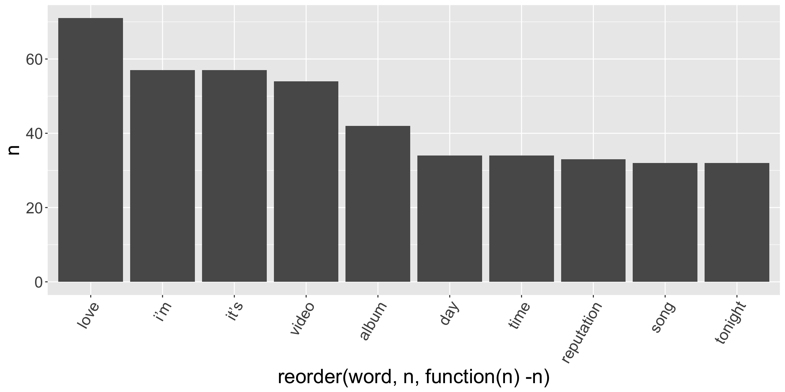

2026-11-10
Lab 6
Mini Project 3
DSC 465: Machine Learning will not be offered in the 2027-2028 school year. It will be offered in Spring 2027 (next semester) and the next time will be Fall 2028
Upcoming Talk about Sports Analytics this Friday at 7pm in Hixson-Lied G04. See flyer on Blueline for more details.
These slides: (qmd) (pdf) (data - TaylorSwift13.csv) (data - imdb.csv)
Text data is one of the most common type of data in the modern world. Usually, it is much more complicated than the numerical data thus we need to pre-process the data before we use it.
A data set that captures tweets from Taylor Swift between 2009 and 2022. We will briefly cover web scraping at the end of this course.
Rows: 756
Columns: 14
$ content <chr> "Thanks for all the beautiful wishes today!! I spent my…
$ created_at <chr> "Tue Dec 13 23:07:26 +0000 2022", "Tue Nov 15 17:17:51 …
$ date <dttm> 2022-12-13 23:07:26, 2022-11-15 17:17:51, 2022-11-11 0…
$ likeCount <dbl> 602625, 32877, 228241, 161916, 111888, 213887, 317294, …
$ media <chr> "[Photo(previewUrl='https://pbs.twimg.com/media/Fj5MSMr…
$ outlinks <chr> "[]", "[]", "['http://store.taylorswift.com']", "['http…
$ quoteCount <dbl> 24562, 1708, 8938, 11507, 1619, 7427, 14803, 11246, 106…
$ quotedTweet <chr> NA, NA, NA, NA, NA, NA, NA, NA, NA, "https://twitter.co…
$ replyCount <dbl> 22331, 2521, 7083, 5755, 2434, 5178, 12135, 2096, 25778…
$ retweetCount <dbl> 96825, 3115, 23829, 17477, 13768, 27945, 30198, 19687, …
$ retweetedTweet <lgl> NA, NA, NA, NA, NA, NA, NA, NA, NA, NA, NA, NA, NA, NA,…
$ url <chr> "https://twitter.com/taylorswift13/status/1602802403492…
$ id <dbl> 1.602802e+18, 1.592568e+18, 1.590865e+18, 1.590782e+18,…
$ conversationId <dbl> 1.602802e+18, 1.592504e+18, 1.590865e+18, 1.590782e+18,…Even though it is always exciting to work with the social media data, its messiness can make the analysis hard.
It usually has a lot of missing data and text data is free of format.
Let’s first focus on the tweet text itself and think about if we can create some variables that are easier to analyze from the text.
Before we extract the information, we need to convert all the text to lower cases (or upper if you preferred)
Suppose, we want to know whether certain words in the text may increase the amount it is retweeted.
Recall the str_detect function in the previous labs. (The stringr package is a common package used for text data).
#HashtagsWe can also look for a specific punctuation.
FALSE TRUE
645 111 We can even count how many hashtag in each text.
There are some other basic information you can extract, like the length of the text
You can also do something fancy (but will take much longer time to run). For example, we can generate the part-of-speech tags for the words in the text and count how many nouns/verbs are in the text.
Note: It will be better to use the text without lower case transformation in the following detection.
library(udpipe) #for parts of speech tagging
detect_ps = function(text){
tokens = udpipe::udpipe(text, "english") #other langauages available
NumNoun = tokens %>% filter(upos == "NOUN") %>% summarise(N = n()) %>% pull()
NumVerb = tokens %>% filter(upos == "VERB") %>% summarise(N = n()) %>% pull()
return(c(NumNoun, NumVerb))
}
detect_ps("
surprise tonight at midnight i’ll be releasing my 8th studio album, folklore; an entire brand new album of songs i’ve poured all of my whims, dreams, fears, and musings into")[1] 12 2This can take a while to run. Here it is run on just the first 100 observations in the data
Rows: 100
Columns: 7
$ content <chr> "Thanks for all the beautiful wishes today!! I spent my 33r…
$ created_at <chr> "Tue Dec 13 23:07:26 +0000 2022", "Tue Nov 15 17:17:51 +000…
$ date <dttm> 2022-12-13 23:07:26, 2022-11-15 17:17:51, 2022-11-11 00:31…
$ likeCount <dbl> 602625, 32877, 228241, 161916, 111888, 213887, 317294, 1897…
$ length <int> 160, 62, 88, 161, 170, 197, 169, 283, 308, 92, 271, 73, 304…
$ numNoun <int> 6, 1, 2, 9, 6, 7, 3, 11, 8, 2, 7, 2, 14, 5, 2, 4, 8, 7, 6, …
$ numVerb <int> 3, 1, 1, 2, 3, 3, 5, 7, 3, 0, 3, 2, 3, 1, 6, 5, 4, 4, 4, 5,…Other techniques like NER (Named entity recognition) can identify whether there is a Human name/Place in the text. See the tutorial if you are interested.
“Sentiment analysis” attempts to quantify the emotional valence of text
syuzhet method identifies “meaningful” words and assigns each a sentiment score from \(-1\) (totally negative) to \(+1\) (totally positive)[1] 0.75[1] -0.5[1] -0.25 Min. 1st Qu. Median Mean 3rd Qu. Max.
-4.0000 0.0000 0.6000 0.8284 1.3500 5.5000 Following is a sample IMDB people data.
Rows: 1,000
Columns: 6
$ nconst <chr> "nm0000001", "nm0000002", "nm0000003", "nm0000004", …
$ primaryName <chr> "Fred Astaire", "Lauren Bacall", "Brigitte Bardot", …
$ birthYear <int> 1899, 1924, 1934, 1949, 1918, 1915, 1899, 1924, 1925…
$ deathYear <int> 1987, 2014, NA, 1982, 2007, 1982, 1957, 2004, 1984, …
$ primaryProfession <chr> "soundtrack,actor,miscellaneous", "actress,soundtrac…
$ knownForTitles <chr> "tt0031983,tt0072308,tt0053137,tt0050419", "tt003835…Create some other variables based on this data: 1. Whether the person is an actor
FALSE TRUE
513 487
1 2 3
63 154 783 In case you skipped over the “Try it yourself” section, you’ll need to load the imdb data:
Warning
Some people, when confronted with a problem, think “I know, I’ll use regular expressions.” Now they have two problems. - Jamie Zawinski
Sometimes we need to clean the data to generate a data that easier for analysis. We can find patterns in the data using regular expressions
A regular expression is a sequence of characters that specify a match pattern to search for in a larger text
[0-9]{3} means “a digit from 0 to 9, three times in a row.
[1] "123-456-7890"
[1] "123-456-7890"Suppose now we only take everyone’s first profession.
primaryProfession column
primaryName primaryProfession firstPro
1 Fred Astaire soundtrack,actor,miscellaneous soundtrack
2 Lauren Bacall actress,soundtrack actress
3 Brigitte Bardot actress,soundtrack,music_department actress
4 John Belushi actor,soundtrack,writer actor
5 Ingmar Bergman writer,director,actor writer
6 Ingrid Bergman actress,soundtrack,producer actress
actor actress art_director
1 423 368 1
assistant_director cinematographer composer director
2 6 2 51
editor make_up_department miscellaneous music_department
3 1 3 13
producer soundtrack writer
40 28 58 Which of the following regular expressions would match a valid variable names in R and not match any invalid variable names?
A. [0-9]+[a-z]* B. [a-zA-Z]+[a-zA-Z0-9_]* C. valid_variable_name
With regular expressions:
[1] "-n- -ppl-" "tw- p--rs" "thr-- b-n-n-s"With a mapping:
Going back to our Taylor Swift example.
chr [1:756] "2022" "2022" "2022" "2022" "2022" "2022" "2022" "2022" "2022" ...One more note: the date/time data can also be treated as the text data. You can choose to extract only the year/month from the complete timestamps.
Dates and times can get messy (what time zone? Is it Daylight Savings Time? Is it 12-hour or 24-hour? Etc.)
Luckily, the lubridate package can handle a lot of that messiness for you, allowing you to deal with dates and times “abstractly”
POSIXct[1:756], format: "2022-12-13 23:07:26" "2022-11-15 17:17:51" "2022-11-11 00:31:01" ... [1] "December" "November" "November" "November" "November" "November"
[7] "November" "November" "November" "October" "October" "October"
[13] "October" "October" "October" "October" "October" "October"
[19] "October" "October" "October" "October" "October" "October"
[25] "October" "October" "August" "June" "June" "June"
[31] "May" "January" "January" "December" "November" "November"
[37] "November" "November" "November" "November" "November" "November"
[43] "November" "November" "November" "November" "November" "November"
[49] "November" "November" "November" "November" "November" "November"
[55] "November" "November" "October" "September" "September" "September"
[61] "September" "September" "August" "August" "August" "August"
[67] "August" "August" "August" "August" "August" "July"
[73] "July" "July" "July" "June" "June" "June"
[79] "June" "June" "June" "June" "June" "June"
[85] "June" "June" "June" "June" "June" "June"
[91] "June" "June" "June" "June" "June" "June"
[97] "June" "June" "June" "June" "May" "May"
[103] "May" "May" "April" "April" "April" "April"
[109] "April" "April" "April" "April" "April" "April"
[115] "April" "April" "April" "April" "March" "March"
[121] "March" "March" "March" "March" "March" "March"
[127] "March" "February" "February" "February" "February" "February"
[133] "February" "February" "February" "January" "January" "January"
[139] "January" "December" "December" "December" "December" "December"
[145] "December" "December" "December" "December" "December" "December"
[151] "December" "December" "December" "December" "December" "December"
[157] "December" "December" "December" "December" "December" "December"
[163] "December" "December" "December" "December" "December" "December"
[169] "December" "December" "December" "December" "December" "December"
[175] "December" "December" "December" "December" "December" "December"
[181] "December" "December" "December" "December" "November" "November"
[187] "November" "November" "November" "November" "November" "November"
[193] "November" "November" "November" "November" "November" "November"
[199] "November" "November" "November" "October" "October" "October"
[205] "September" "September" "September" "September" "September" "August"
[211] "August" "August" "August" "August" "August" "August"
[217] "August" "August" "July" "July" "July" "July"
[223] "July" "July" "July" "July" "July" "July"
[229] "July" "July" "July" "July" "July" "July"
[235] "July" "July" "July" "July" "June" "June"
[241] "June" "June" "June" "June" "June" "June"
[247] "June" "June" "June" "June" "June" "June"
[253] "June" "June" "June" "May" "May" "May"
[259] "May" "May" "May" "May" "May" "May"
[265] "May" "May" "May" "May" "May" "May"
[271] "May" "May" "May" "May" "May" "April"
[277] "April" "April" "April" "April" "March" "March"
[283] "March" "March" "March" "March" "February" "February"
[289] "February" "February" "February" "February" "February" "February"
[295] "February" "February" "February" "February" "February" "February"
[301] "February" "February" "February" "February" "February" "February"
[307] "February" "February" "February" "February" "February" "January"
[313] "January" "January" "January" "January" "January" "December"
[319] "December" "December" "December" "December" "December" "December"
[325] "December" "December" "December" "December" "December" "December"
[331] "December" "December" "December" "December" "December" "December"
[337] "December" "December" "December" "December" "December" "December"
[343] "December" "December" "November" "November" "November" "November"
[349] "November" "November" "November" "November" "November" "November"
[355] "November" "November" "November" "November" "November" "November"
[361] "November" "November" "November" "November" "November" "November"
[367] "November" "October" "October" "October" "October" "October"
[373] "October" "October" "October" "October" "October" "October"
[379] "October" "October" "October" "September" "September" "September"
[385] "September" "September" "September" "September" "September" "August"
[391] "August" "August" "August" "August" "August" "August"
[397] "August" "August" "August" "August" "August" "August"
[403] "August" "August" "August" "August" "August" "August"
[409] "August" "August" "August" "August" "August" "August"
[415] "August" "August" "August" "August" "August" "August"
[421] "August" "August" "August" "August" "August" "August"
[427] "August" "August" "August" "August" "August" "August"
[433] "August" "August" "August" "August" "August" "August"
[439] "August" "August" "August" "August" "August" "August"
[445] "August" "August" "August" "August" "August" "August"
[451] "August" "August" "August" "August" "August" "August"
[457] "August" "August" "August" "August" "August" "August"
[463] "August" "August" "August" "August" "August" "August"
[469] "August" "August" "August" "July" "July" "July"
[475] "July" "July" "July" "July" "July" "July"
[481] "June" "June" "June" "June" "June" "June"
[487] "June" "June" "June" "June" "June" "June"
[493] "June" "June" "June" "June" "June" "June"
[499] "June" "June" "June" "June" "May" "May"
[505] "May" "May" "May" "May" "May" "May"
[511] "May" "May" "May" "May" "May" "May"
[517] "May" "May" "May" "May" "May" "May"
[523] "May" "April" "April" "April" "April" "April"
[529] "April" "April" "April" "April" "April" "April"
[535] "April" "April" "April" "April" "April" "April"
[541] "April" "April" "April" "April" "April" "April"
[547] "April" "April" "April" "April" "April" "April"
[553] "April" "April" "February" "December" "December" "December"
[559] "December" "June" "May" "May" "April" "March"
[565] "March" "March" "March" "March" "March" "February"
[571] "January" "January" "December" "December" "December" "December"
[577] "November" "November" "November" "November" "November" "November"
[583] "November" "November" "November" "November" "November" "November"
[589] "November" "November" "November" "November" "November" "November"
[595] "November" "November" "November" "November" "November" "November"
[601] "November" "November" "November" "November" "November" "November"
[607] "November" "November" "November" "November" "November" "November"
[613] "November" "November" "October" "October" "September" "September"
[619] "September" "September" "September" "August" "August" "August"
[625] "August" "August" "August" "August" "November" "November"
[631] "November" "November" "November" "November" "November" "November"
[637] "November" "November" "November" "August" "August" "June"
[643] "June" "April" "February" "January" "January" "January"
[649] "December" "December" "December" "December" "December" "November"
[655] "November" "November" "November" "November" "October" "October"
[661] "October" "October" "October" "October" "October" "October"
[667] "October" "October" "October" "October" "October" "October"
[673] "October" "September" "September" "September" "September" "September"
[679] "September" "September" "September" "September" "September" "September"
[685] "September" "September" "September" "September" "September" "September"
[691] "September" "September" "September" "September" "August" "August"
[697] "August" "August" "August" "August" "August" "August"
[703] "August" "August" "August" "August" "August" "August"
[709] "August" "August" "August" "August" "August" "July"
[715] "July" "July" "July" "July" "July" "July"
[721] "July" "July" "July" "July" "July" "July"
[727] "June" "June" "June" "June" "June" "June"
[733] "June" "May" "May" "May" "May" "May"
[739] "May" "April" "April" "April" "April" "April"
[745] "April" "April" "April" "March" "March" "March"
[751] "March" "March" "March" "March" "March" "March" Instead of generating new variables to fit a model, sometimes we just what to know what those texts are about.
It is difficult to analyze a sentence of text. - We can’t filter out words or count which occur most frequently since it is made up of multiple words, and the order matters - Hence, we need to covert it into tokens. - A token is a meaningful unit of text that can be used for further analysis. + (Yes, these are the same tokens being referred to in LLM usage)
We create tokens using the unnest_tokens function.
# A tibble: 6 × 1
word
<chr>
1 thanks
2 for
3 all
4 the
5 beautiful
6 wishes 
Stop words are words that do not have meaning in the text, like “the” and “a”.
Rows: 1,149
Columns: 2
$ word <chr> "a", "a's", "able", "about", "above", "according", "accordingl…
$ lexicon <chr> "SMART", "SMART", "SMART", "SMART", "SMART", "SMART", "SMART",…
You can create a Word Cloud (only if output is html!) - https://r-graph-gallery.com/196-the-wordcloud2-library.html
You can also show the general trend of sentiments in all the words.
#library(textdata)
nrc_lex <- get_sentiments("nrc")
fn_sentiment <- tweet_words_interesting %>% left_join(nrc_lex)
fn_sentiment %>% filter(!is.na(sentiment)) %>%
group_by(sentiment) %>%
summarise(n=n())
bing_lex <- get_sentiments("bing")
fn_sentiment <- tweet_words_interesting %>% left_join(bing_lex)
fn_sentiment %>% filter(!is.na(sentiment)) %>% group_by(sentiment) %>% summarise(n=n())using nrc
# A tibble: 10 × 2
sentiment n
<chr> <int>
1 anger 153
2 anticipation 424
3 disgust 87
4 fear 181
5 joy 524
6 negative 259
7 positive 792
8 sadness 149
9 surprise 199
10 trust 401using bing
# A tibble: 2 × 2
sentiment n
<chr> <int>
1 negative 257
2 positive 654